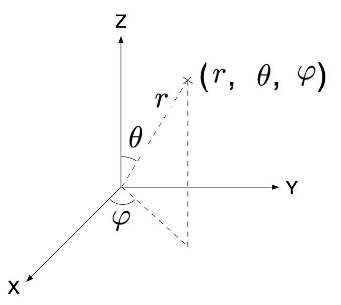
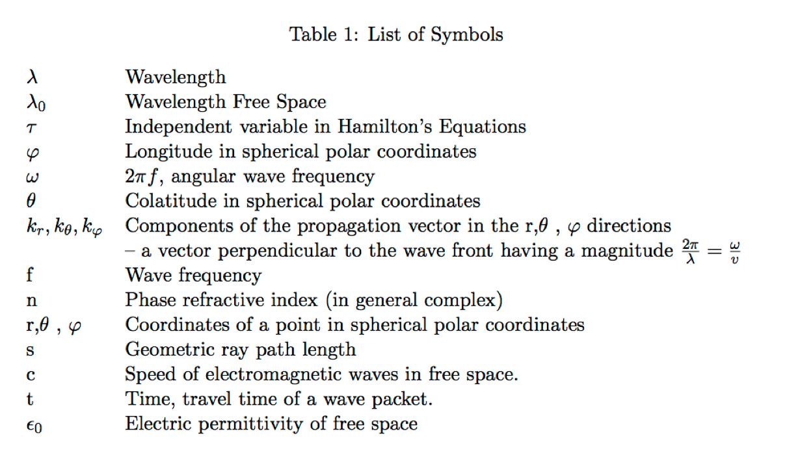
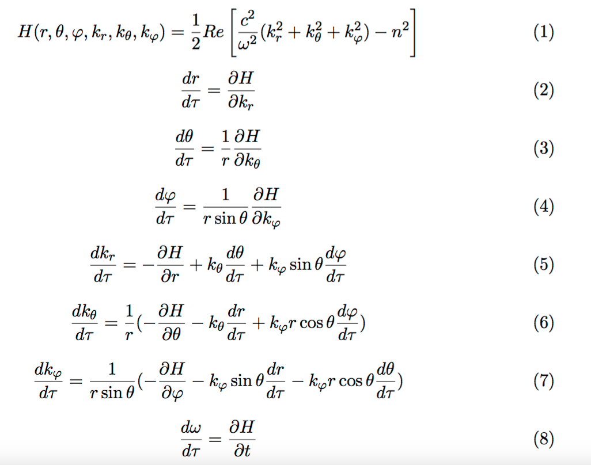
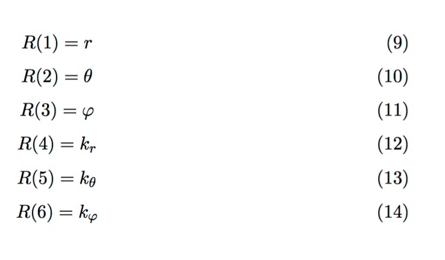
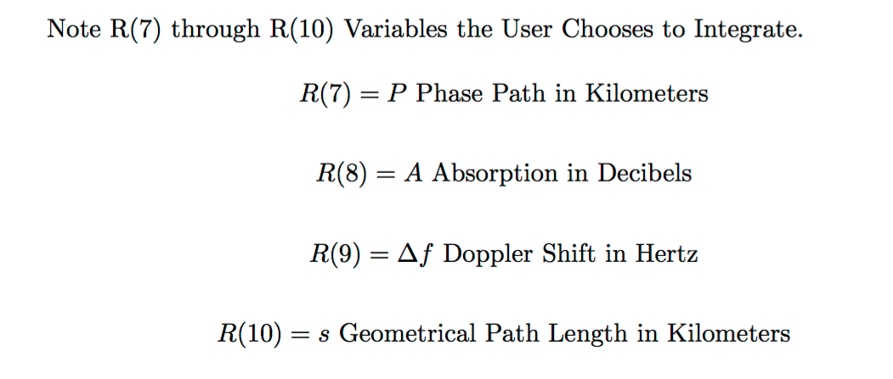

|
|---|
Ray Tracing Through the IONOSPHERE
FORTRAN Code
Ray Tracing Through the IONOSPHERE Open Source Mathematica ® Code Click Here.
For Description Click Here
Case |
Description | Code | Result Plots |
|---|---|---|---|
1 |
FORTRAN Code for Ray Tracing Radio Waves Through the IONOSPHERE. Cleaned up and debugged from Scan and OCR of [Jones, Stephenson, 1975] Original CDC Mainframe FORTRAN. Compiles with gfortran. Note: Use a Professional Compiler until some issues with gfortran need to be resolved. |
(7.7 MBytes) |
|
2 |
Ray Trace Results Plotted | ||
| Parameter text file. Place in same directory as FORTRAN Executable. | -- | ||
3 |
Latex File for Hamiltonian, Derivatives and Symbol Table |
{kind=link}
{kind=link}
{kind=link}
{kind=link}
Tools
Item |
Description | Code | WEB View | Graphic |
|---|---|---|---|---|
1 |
Java Open Source Plotting Package ( IIPPLOT) | CCDSP | -- | Ray Tracing |
References:
1- R. Michael Jones, Judith J. Stephenson, A Versatile Three-Dimensional Ray Tracing
Compute Program for Radio Waves in the Ionosphere, OT Report 75-75, US Department of Commerce, October 1975  PDF Report.
PDF Report.
Description
FORTRAN Code from Scanned Report (OT Report 75-76) and OCR in 2002 by Sasan Ardalan
Compiles and Links using gfortran
Rework in December 2018 by Sasan Ardalan
Detailed work to match source code with published code. Major work to change from CDC Main Frame Fortran to gfortran.
Massive effort in debugging.
Also debug option for printing of variables. See nitial.f
This FORTRAN Code available at:
Visit the site for plots of raytracing.
Also translation to Mathematica by Sasan Ardalan. Click here for Mathematica Code.
PERL Script and Plotting
We have also included the handy PERL script:
process_raytracing.pl
This is in the Results folder.
Execute:
./raypath <ray.dat> results.txt
Edit results.txt to get data for a trace ( say at 45 degrees elevation). Call it result_45.txt
perl process_raytracing.pl < result_45.txt> ray_trace_45.txt
Plot the result. Use
java -jar IIPPLOT.jar ray_trace_45.txt
See here for IIPPLOT Open Source Plotting Package.
Note that we added the text "uu" to each relavant line in the FORTRAN results so that the line can be grabbed with PERL and the Height and Range extracted (and Swapped) to plot the ray trace.
Notes on FORTRAN Code
- Had to change SSTEP error in reach.f to 0.5E-3 so that elevation angles below 30 degrees work ( 15 and 0).
- Results follow the OT Report 75-76, however do not match which could be for a number of reasons. Need to verify that models are exactly the same.
- At close to and including elevation of 90 degrees results are off when wave reversus. The range starts to decrease
- If we continue to debug it would never end and you would not be reading this.
- GFORTRAN needs to be checked against a commercial or another FORTRAN complier.
- Cases where gfortran doing something or not doing something for no good reason.
- Will try and document and submit to GFORTRAN group.
- Check nitial.f for some hardwired values ( W values ignored).
- Added COMMON /RK/ DELY ,BET ,XV ,FV ,YU ,RR,LL,MM,ALPHA,EPM to rkam.f and trace.f this was a major change since original CDC FORTRAN must have assumed variable persistance between subroutine calls.
- In CDC FORTRAN DRDT(1) was set using only DRDT. Fixed this in hamltn.f
Note in FORTRAN Elevation of 90 Degrees is Vertical Launch.
Hamiltonian

Spherical Coordinates

Hamiltonian and Derivatives

Ray Vector

Ray Vector Options
